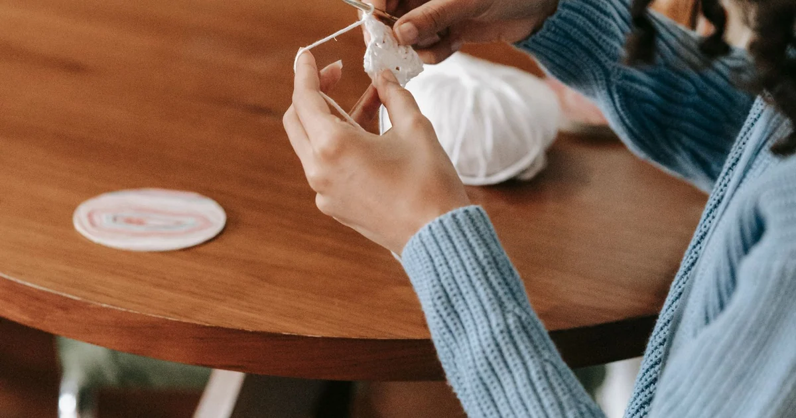
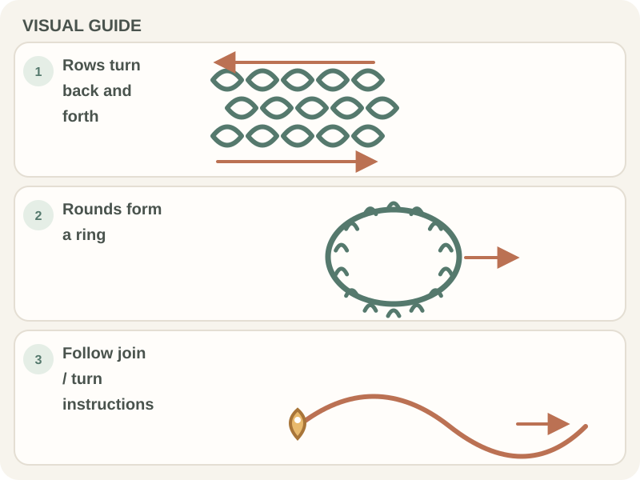

Stitches & Techniques · Beginner guide
How to Crochet in Rows vs. Rounds
Understand whether a project is worked back and forth in rows or continuously around in rounds.

Rows turn at an edge; rounds continue around a center or tube. Construction affects the next stitch location, turning, and seam visibility.
Before you begin
Look for pattern cues such as “turn,” “join,” or “round.” A project can combine rows and rounds, so follow each instruction rather than judging by shape.
Step-by-step instructions
- If the instruction says to work across and turn, finish the row, rotate the piece, and begin as directed.
- If it says to join, close the round at the stated point before moving on.
- If it says to continue in a spiral, keep working around and move your marker to the new round start.
- Check whether the front stays facing you or alternates; this can affect texture and color placement.

What to check
Follow the construction verbs
Rows create side edges and turning-chain transitions. Rounds form a continuous path, though joined rounds may show a seam. Use the written instruction to settle ambiguity.
Frequently asked questions
Can a blanket be made in rounds?
Yes. Shape alone does not determine construction; the pattern says whether to use rows or rounds.
Do I turn after a joined round?
Only if the pattern says so. Some designs turn to alternate seam direction; others do not.
Tell rows and rounds apart
For rows versus rounds, use this as the starting rule: rows build back-and-forth fabric while rounds progress around a center or tube. The stitch sequence and the pattern’s edge rules determine where the hook goes and what counts. Read the relevant instructions before beginning and keep them nearby as you work. If a general tutorial and the pattern give different directions, follow the pattern’s stated convention; another project may use a different method.
Look for turning, joining, or spiral cues
Before proceeding, confirm whether the work is turned, joined, or continued in a spiral. Write any project-specific choice in your notes so you can apply it consistently. If the pattern or label leaves the detail unclear, look for its own key or maker guidance rather than assuming that another project follows the same convention. This short check can prevent a small misunderstanding from affecting the rest of the work.
Consider the shape each method creates
A practical way to apply rows versus rounds: Work a short swatch and look for the turn, join, and round-start instructions before stitching. After a few stitches, pause and look at the loops before repeating the movement. Good light and smooth yarn can make the structure easier to see while you learn. If the sample does not match the pattern’s directions, undo the short section and repeat the step slowly; changing one movement at a time makes the cause easier to spot.
Check where the next section begins
A common mistake in rows versus rounds is assuming every round is joined or every row uses the same turning chain. Watch for this sign: a seam appears where a spiral was intended, or vice versa. That can change the stitch count or leave a loop difficult to work into. Compare the recent work with the pattern and locate the first point where they differ. Correct that detail before continuing; stretching the fabric or adding an unplanned step can hide the cause without fixing it.
Avoid adding an unintended seam
If a seam appears where a spiral was intended, or vice versa, first check whether the work is turned, joined, or continued in a spiral. Then compare the stitch sequence, insertion point, and edge count at the last correct row with what you actually have. Change one thing at a time so you can tell whether it addresses the problem. If the instructions and materials match but the result still differs, use the project’s gauge, sizing, substitution, or care notes as relevant; those are more useful than a universal fix.
Use the construction the pattern names
Remember: choose the construction described by the pattern. Following the same insertion and pull-through sequence helps keep the stitch structure recognizable from one row to the next. If you choose an alternative, record it and compare a small sample or written step before applying the change across the project.
Choose the method that fits the project
To make rows versus rounds easier to repeat, use this sequence: look for the turn, join, and round-start instructions before stitching, inspect the result, and only then continue. At first, slow down at the point where the pattern changes direction, begins a new round, or starts a repeat. A removable marker or brief row note can hold your place while you learn the construction. Once the sequence is clear, you can work more steadily without guessing which loop or instruction comes next.
Conclusion: Rows versus rounds
Keep this lesson in mind: choose the construction described by the pattern. Carry the pattern’s stitch and edge rule into the next row. Rows usually turn the work; rounds continue around it, either joined or in a spiral. Some patterns combine both constructions.